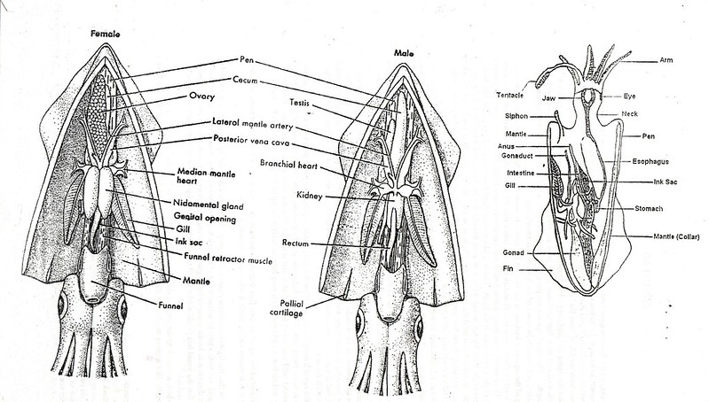

OK, before we go on to the next section let’s practice marking up some plain text using R markdown syntax.
Create a new R markdown document in RStudio and save it with an appropriate file name on your computer (perhaps squid_analysis.Rmd). Make sure you fill out the ‘Title’ and ‘Author’ information and set the output option to HTML when you create your document. Next, copy and paste the text below into your R markdown document.
Sampling and data description
These data were originally collected as part of a study published in
Aquatic Living Resources (Smith et al. 2005). The aim of the study was
to investigate the seasonal patterns of investment in somatic and
reproductive tissues in the long finned squid Loligo forbesi caught
in Scottish waters. Squid were caught monthly from December
1989 - July 1991 (month and year variables). After capture, each
squid was given a unique specimen code (specimen variable) and
the following variables measured:
body weight - weight variable
sex - sex variable (only female squid are included here)
individual dorsal mantle length -DML variable
mantle weight measured without internal organs - eviscerate.weight variable
gonads weight - ovary.weight variable
nidamental gland weight - nid.weight variable.names
nidamental gland length - nid.length variable
digestive gland weight - dig.weight variable
Each individual was also assigned a categorical measure of maturity
(maturity.stage variable) ranging from 1 to 5 with 1 = immature, 5 = mature.
Some interesting background information on squid morphology can be
found here (https://en.wikipedia.org/wiki/Loligo_forbesii) and the
following image provides a useful summary of squid anatomy You will also need to download this image. Create a subdirectory called images in the same directory as your R markdown document and save the image file there (right click and then choose save image as... or similar). You will embed this image after your text in your R markdown document.
Now mark it up using R markdown syntax so your rendered output document looks like this.
Sampling and data description
These data were originally collected as part of a study published in Aquatic Living Resources (Smith et al., 2005). The aim of the study was to investigate the seasonal patterns of investment in somatic and reproductive tissues in the long finned squid Loligo forbesi caught in Scottish waters. Squid were caught monthly from December 1989 - July 1991 (month and year variables). After capture, each squid was given a unique specimen code (specimen variable) and the following variables measured:
- weight variable - body weight (g)
- sex variable - sex (only female squid are included here)
- DML variable - individual dorsal mantle length (mm)
- eviscerate.weight variable - mantle weight measured without internal organs (g)
- ovary.weight variable - gonad weight (g)
- nid.weight variable - nidamental gland weight (g)
- nid.length variable - nidamental gland length (g)
- dig.weight variable - digestive gland weight (g)
Each individual was also assigned a categorical measure of maturity (maturity.stage variable) ranging from 1 to 5 with 1 = immature, 5 = mature.
Some interesting background information on squid morphology can be found here and the following image provides a useful summary of squid anatomy.

Once you’re happy with marking up your text, knit your R markdown document to a HTML file. Open this file in your web browser and check all your formatting. You could also try knitting to a pdf document.
You can find the solution below (click on the ‘code’ button on the right)
## Sampling and data description
These data were originally collected as part of a study published in Aquatic Living Resources (Smith *et al*., 2005). The aim of the study was to investigate the seasonal patterns of investment in somatic and reproductive tissues in the long finned squid *Loligo forbesi* caught in Scottish waters. Squid were caught monthly from December 1989 - July 1991 (**month** and **year variables**). After capture, each squid was given a unique specimen code (**specimen variable**) and the following variables measured:
- **weight variable** - body weight (g)
- **sex variable** - sex (only female squid are included here)
- **DML variable** - individual dorsal mantle length (mm)
- **eviscerate.weight variable** - mantle weight measured without internal organs (g)
- **ovary.weight variable** - gonad weight (g)
- **nid.weight variable** - nidamental gland weight (g)
- **nid.length variable** - nidamental gland length (g)
- **dig.weight variable** - digestive gland weight (g)
Each individual was also assigned a categorical measure of maturity (**maturity.stage variable**) ranging from 1 to 5 with 1 = immature, 5 = mature.
Some interesting background information on squid morphology can be found [here](https://en.wikipedia.org/wiki/Loligo_forbesii) and the following image provides a useful summary of squid anatomy.
 {kind=link}